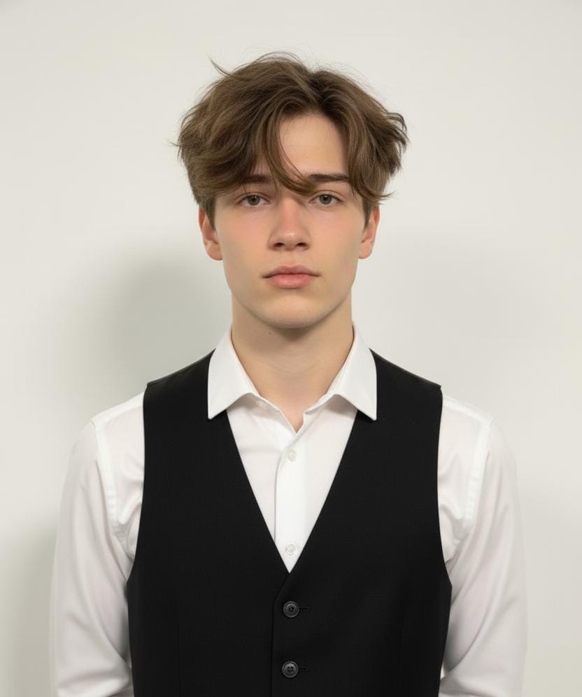
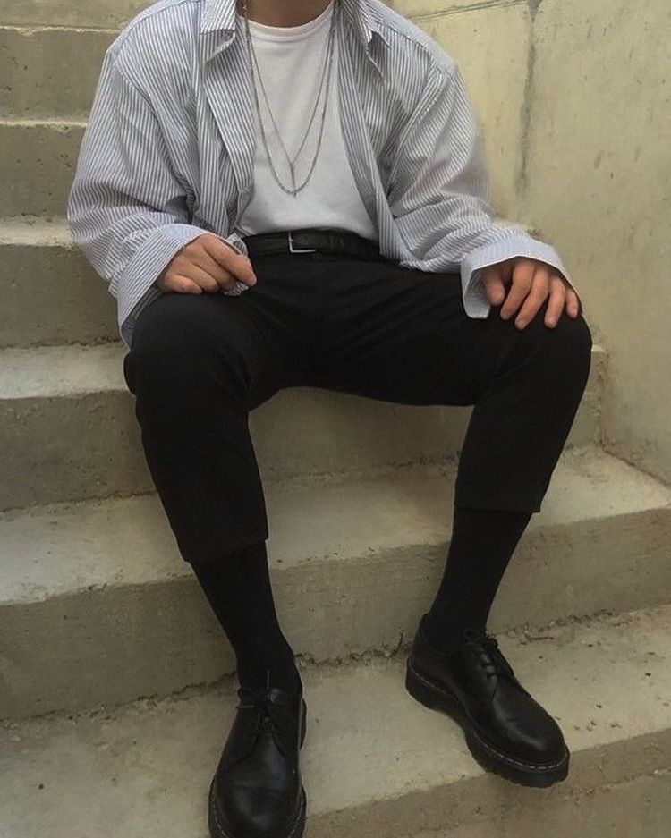
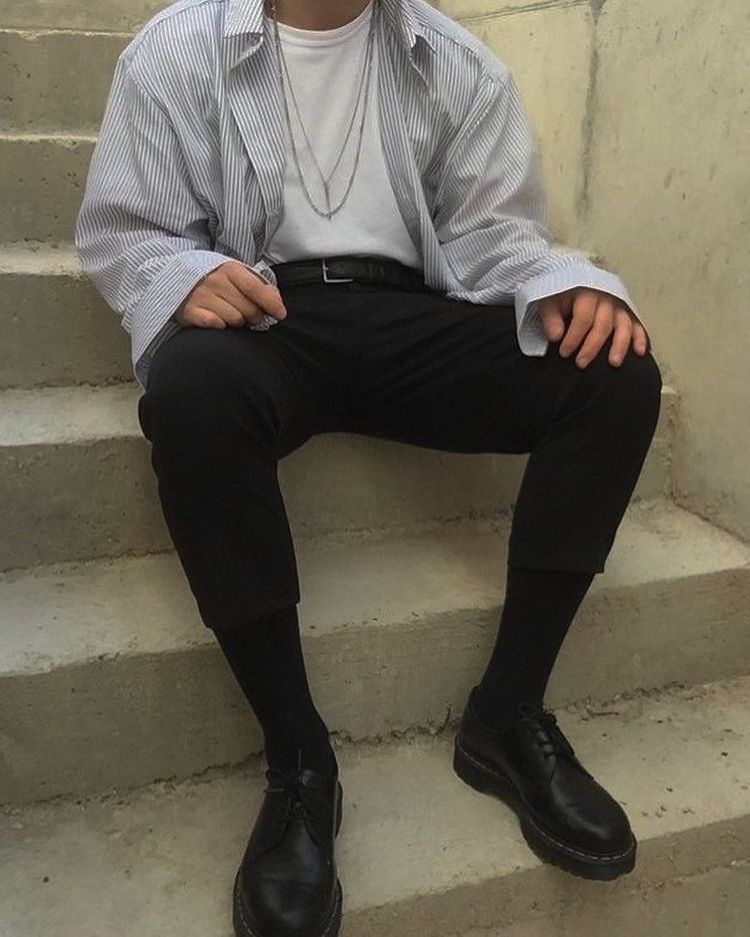

David Baptise
19
Edad Azul marino
Color 30/06
Cumpleaños
Edad Azul marino
Color 30/06
Cumpleaños
Es reservado y muy introspectivo. Pero comparte la misma neurona que Mark y Steven.
Mayor miedo: Perder el control y decepcionar a todos. En especial a su padre y su hermano gemelo.
Mayor sueño: Una vida tranquila y una familia unida.
Hobbies: Gym, tocar el bajo y jardíneria.

 
